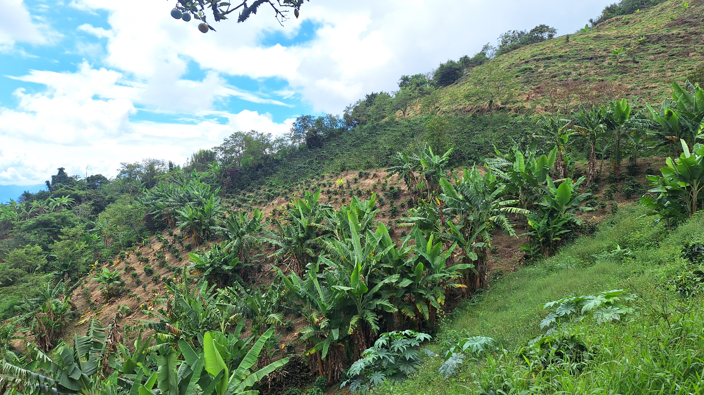
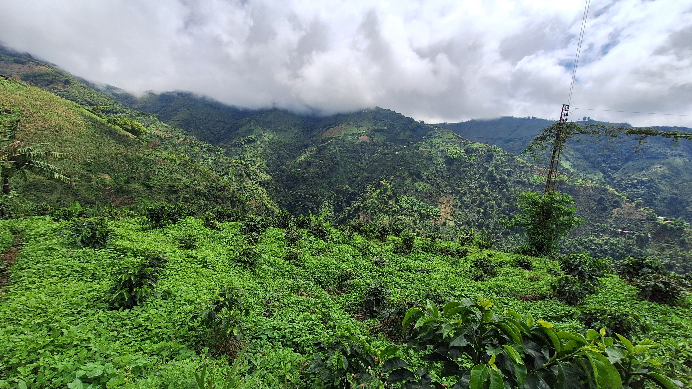
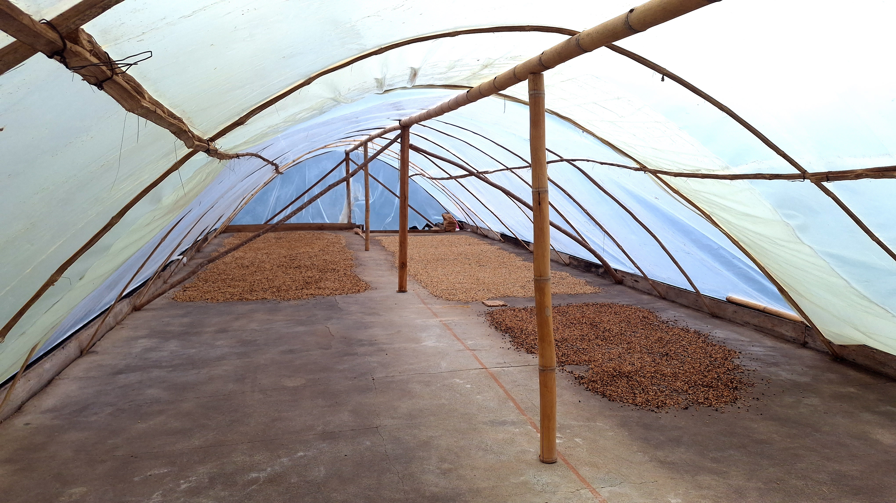

El café es la consecuencia del lugar donde nace
La Merced · Caldas · Colombia
La Merced está en la cordillera central de Caldas, donde el bosque de niebla se mezcla con los cafetales y las montañas retienen la humedad hasta bien entrada la mañana. Ese clima —cambiante, fresco, generoso en sombra— es lo primero que determina el café, mucho antes de que exista una marca que lo cuente.
No diseñamos Miraflores para representar un origen genérico. La representamos porque no podría existir en ningún otro lugar.
Miraflores es de mi padre, mi hermano y mío. No la heredamos como negocio: la heredamos como responsabilidad. Cada lote se cultiva conociendo su pendiente, su sombra y su suelo, porque un cafetal no se administra desde lejos —se camina.
La altura, la niebla y la sombra del bosque cercano condicionan cada taza antes que cualquier decisión nuestra. Trabajamos a favor de esas condiciones, no en contra de ellas.
La maduración del grano, la fermentación y el secado siguen su propio ritmo. Intervenir menos, con más atención, produce mejores resultados que intervenir más rápido.
Cada lote se cosecha, procesa y evalúa por separado. La calidad no es una promesa general: es la suma de decisiones pequeñas, verificables una por una.
Un café de especialidad no se logra en un solo paso, sino en la suma cuidada de varios. Este es el orden real que sigue cada lote de Miraflores.
Se recoge únicamente la cereza que alcanzó su punto óptimo de maduración. El resto se deja en la rama para una siguiente pasada.
La cereza se despulpa el mismo día de la cosecha, antes de que el calor del día altere el fruto recién recolectado.
El mucílago se fermenta bajo tiempos y temperaturas monitoreados, buscando equilibrio de acidez sin dejarlo al azar.
Se lava con agua de nacimiento propio hasta retirar por completo el mucílago fermentado.
El grano se seca lentamente al sol, protegido de la lluvia, hasta llegar a la humedad precisa para su almacenamiento.
Ya en pergamino estable, el café se trilla y se tuesta en lotes pequeños, con una curva de tostión media pensada para conservar su dulzura natural.


Paisaje, cultivo y proceso: tres miradas del mismo lugar.





Preferimos mostrar el perfil de catación completo a repetir que es "el mejor café del mundo". Un número, una certificación y una ficha sensorial dicen más, en menos palabras, y pueden verificarse.